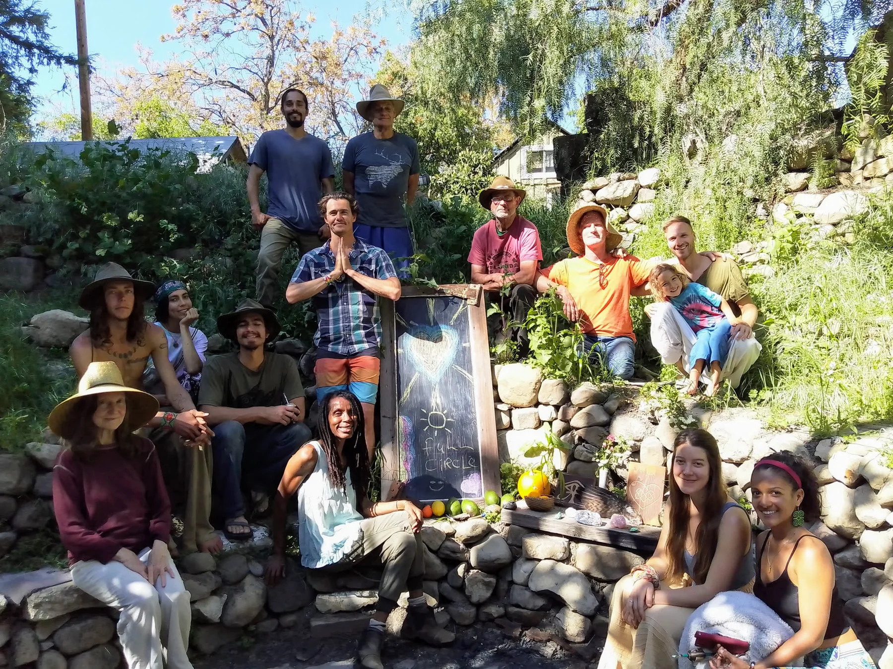
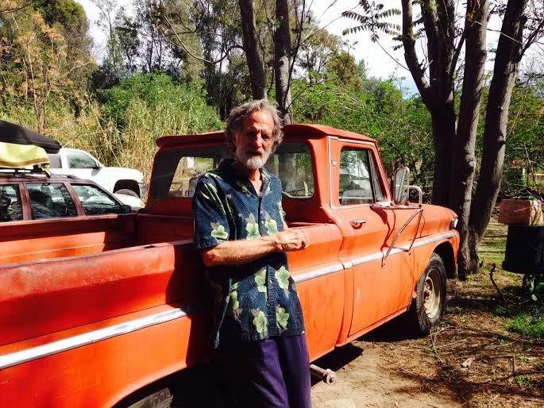
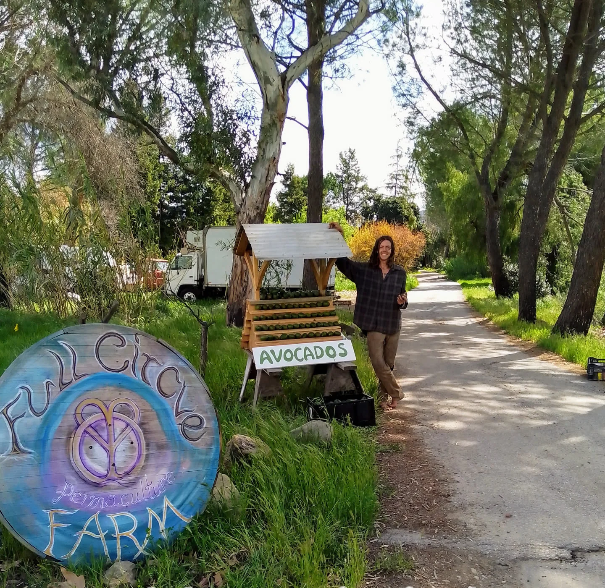
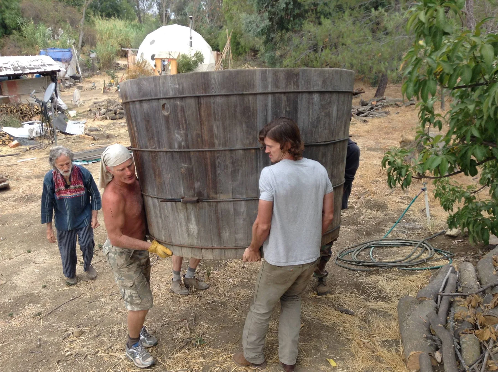
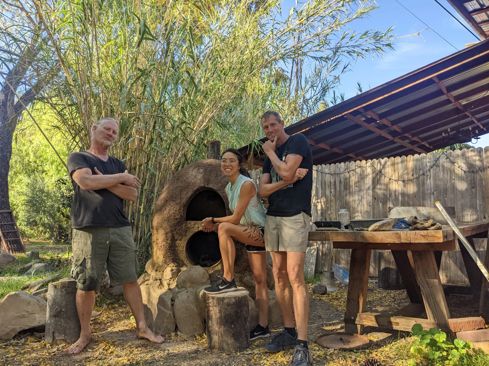
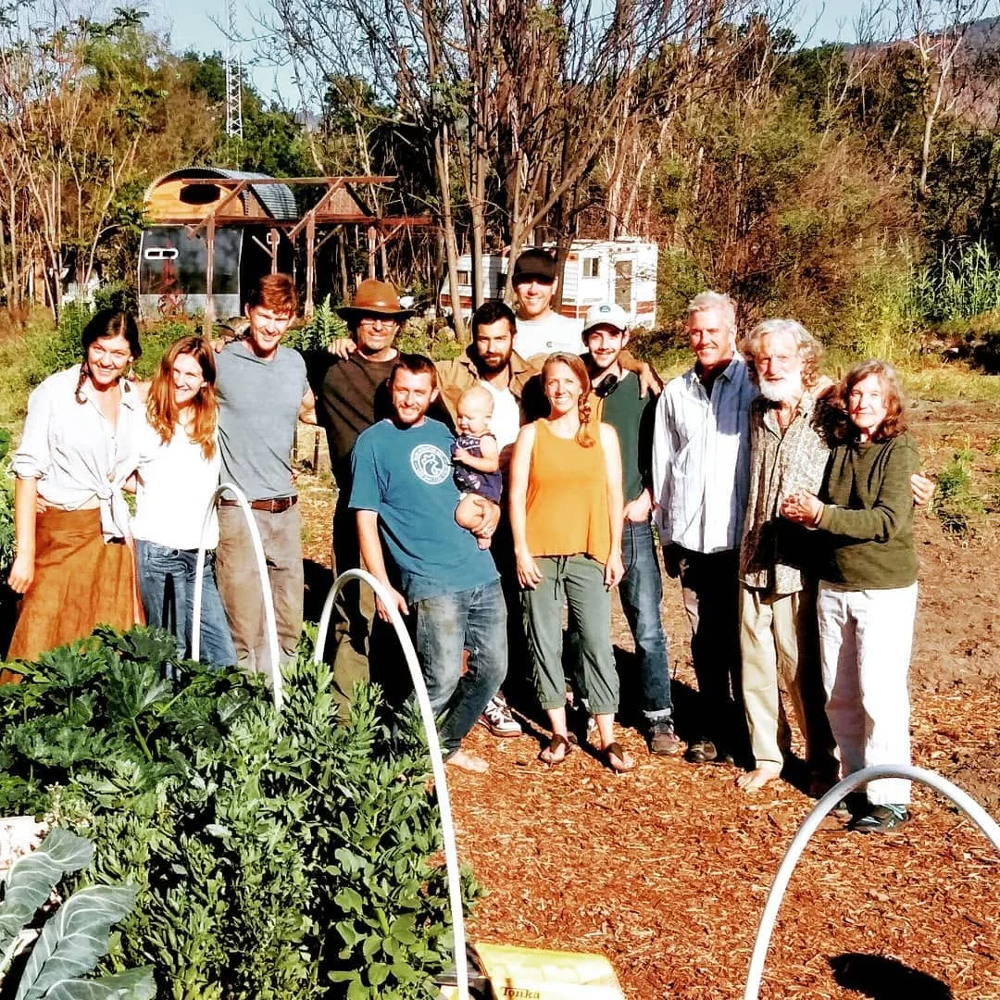
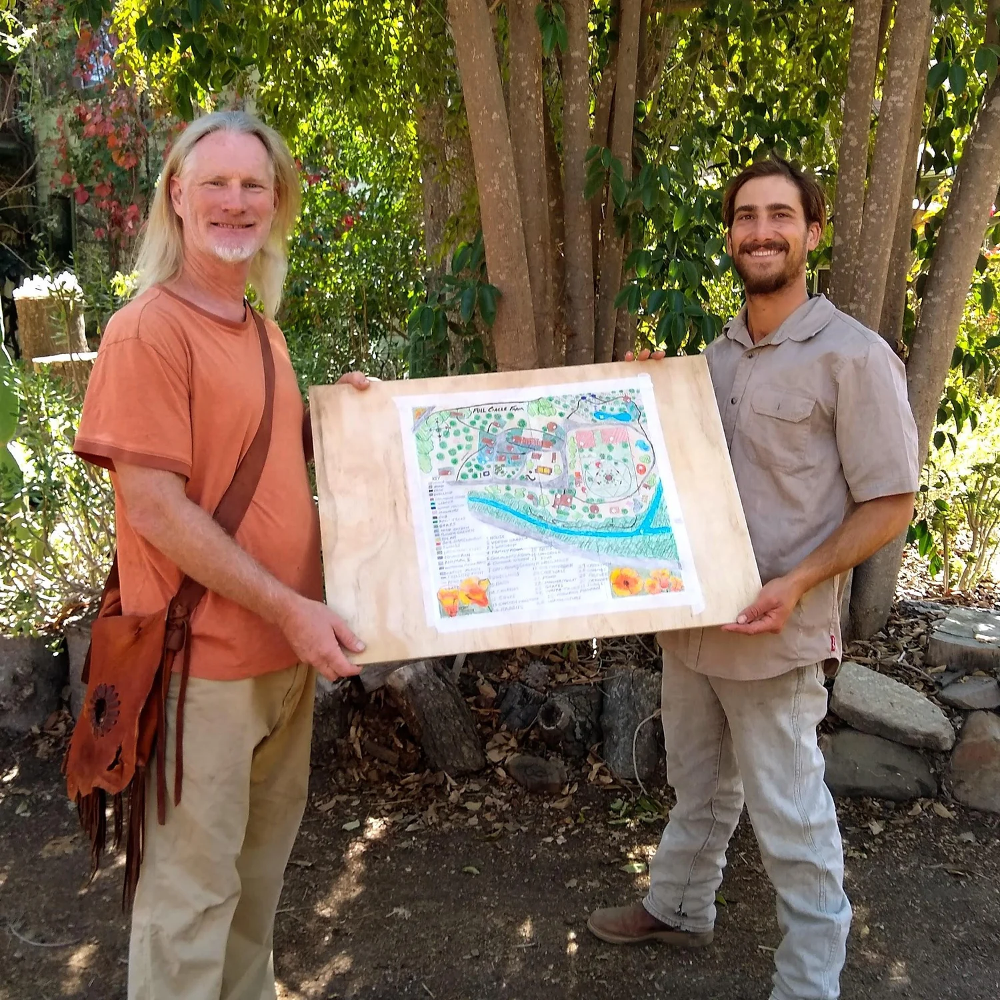
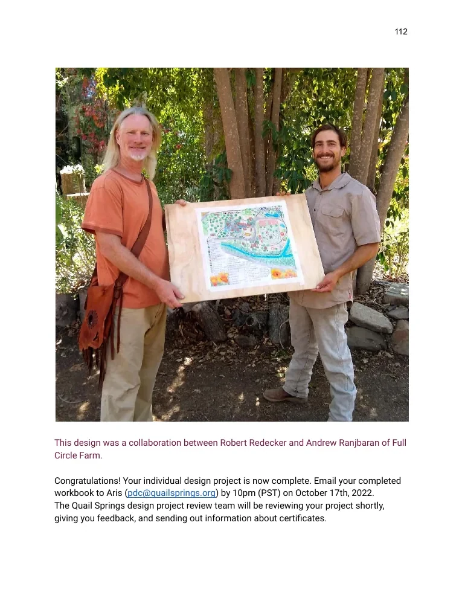

Notes from the Land
Full Circle
Paradise
A permaculture journal of land, people and shared life at Full Circle Farm, a 5.5-acre intentional community in Upper Ojai, California.
Explore the journey
Explore the Journal
Chapters from the Land
Water, soil, food, buildings, energy, wildlife and community are woven together throughout the landscape.

01The Farm
Community, history and sense of place.
Explore →
02Site Tour
A walk through the property’s many layers.
Explore → 03
03
Climate & Ecology
Sun, heat, frost, habitat and microclimates.
Explore →
04Water
Sources, storage, movement and reuse.
Explore → 05
05
Food & Soil
Gardens, orchards, animals and fertility.
Explore →
06Buildings & Energy
Homes, shared infrastructure and repair.
Explore →
07Social Permaculture
Community, shared work, governance and belonging.
Explore →
08The Design
Patterns, priorities and implementation.
Explore →
09Original Workbook
The complete 112-page project archive.
Explore →Working with nature.
Building community.
Creating abundance.
This design began as the final project for the Spring 2022 Quail Springs Permaculture Design Course. It records a mature, complicated place: decades of gardens, orchards, buildings, experiments, friendships and accumulated knowledge.
The website is a concise illustrated edition of the original 112-page workbook. It preserves the observations and proposals while making the story easier to explore.

“A supportive, peaceful environment for people to consciously live in abundance and harmony with nature and each other.”
Full Circle Farm vision